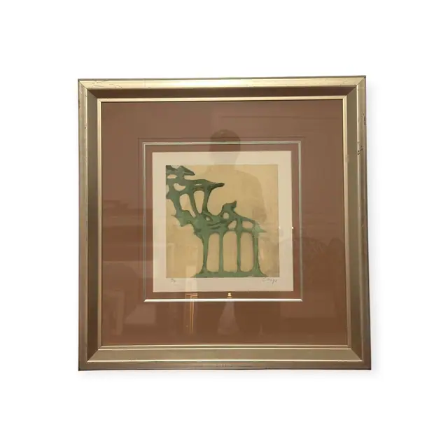
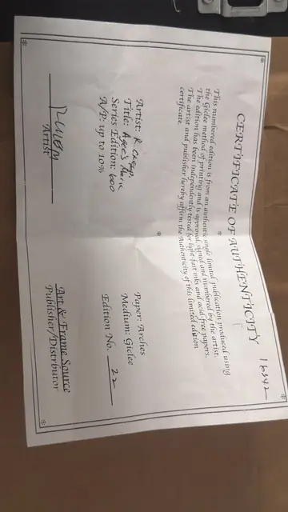
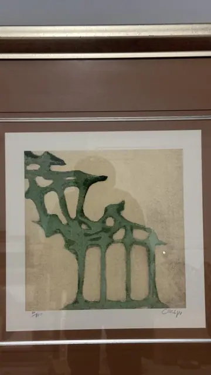
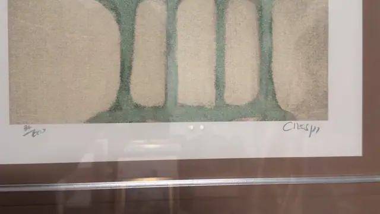

Paintings & Prints
R. Crespi, 'Agee's Mark', Signed Giclee 22/600, Framed
R. Crespi · late 20th to early 21st century
Price Upon Request




About the Item
R. Crespi. A soft sage-green mass spreads across the upper half of the sheet and drops into four squat rounded piers, so the image hovers between a wind-shaped tree and a little arcaded ruin. The green is applied in a granular, absorbent wash that fades to blue-grey at the edges; behind it the ground is a mottled sand and putty field with a faint darker halo around the form. Wide untouched margins, pencil-numbered at the left and pencil-signed at the right. Cream inner mat over a deep mocha mat, in a slim brushed silver-gold frame under glass. Medium: giclee on Arches paper. Signed lower right margin, in pencil, reading "Crespi". Edition: Edition No. 22 of a series edition of 600, plus A/P up to 10%. Accompanied by a certificate: Printed certificate of authenticity for a giclee on Arches paper, artist R. Cresp(i), title 'Agee's Mark', series edition 600 with A/P up to 10%, this copy Edition No. 22, signed by the artist and by the publisher Art & Frame Source; the word 'Distributor' is misspelled 'Distrbutor' on the form. Inscribed on the reverse or mount: CERTIFICATE OF AUTHENTICITY; This numbered edition is from an authentic single limited publication produced using the Giclee method of printing and is approved, signed and numbered by the artist. The edition has been independently tested for light-fast inks and acid-free papers. The artist and publisher hereby affirm the Authenticity of this limited edition certificate.; Artist: R. CRESP.; Title: Agee's Mark. Condition: Print clean with no foxing or cockling visible. The certificate is creased from folding and has a handwritten stock number in one corner. Reflections and a photographer's silhouette across the glazing.
About the Artist
Rubin Crespi is a contemporary artist, described in auction catalogues as Swiss, whose signed and numbered abstract giclees on Arches paper circulate widely with documented titles such as Brahma II. The signature and edition format of these pieces are consistent with his published editions.
Details
- Creator:
- R. Crespi
- Creation Year:
- late 20th to early 21st century
- Dimensions:
- Height: 30.5 in (77.47 cm)
Width: 30.0 in (76.2 cm)
outside of frame - Medium:
- giclee on Arches paper
- Edition:
- Edition No. 22 of a series edition of 600, plus A/P up to 10%
- Period:
- 21St
- Condition:
- Offered in the condition shown in the photographs.
- Reference Number:
- VO-124
- Documentation:
- Printed certificate of authenticity for a giclee on Arches paper, artist R. Cresp(i), title 'Agee's Mark', series edition 600 with A/P up to 10%, this copy Edition No. 22, signed by the artist and by the publisher Art & Frame Source; the word 'Distributor' is misspelled 'Distrbutor' on the form.
- Gallery Location:
- CERTIFICATE OF AUTHENTICITY; This numbered edition is from an authentic single limited publication produced using the Giclee method of printing and is approved, signed and numbered by the artist. The edition has been independently tested for light-fast inks and acid-free papers. The artist and publisher hereby affirm the Authenticity of this limited edition certificate.; Artist: R. CRESP.